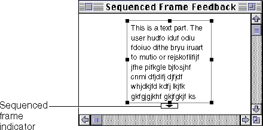
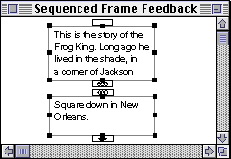
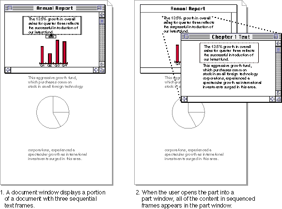
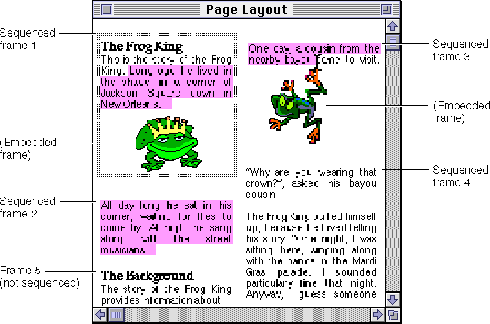
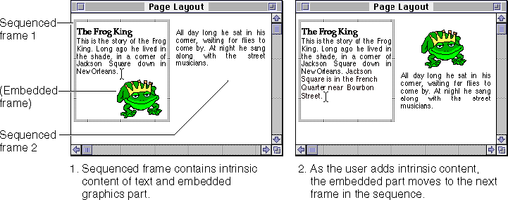
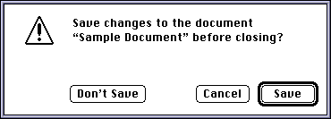

Handling Content
This section discusses actions and frame modifications that your part editor can perform when the user adds content to a part. It also discusses how to delete content and how to support the Undo command.Resizing or Adding Frames When Pasting
If the user adds content to an embedded part so that some of the content is cropped by the frame, the embedded part should ask the containing part to resize the frame to display all of the new content. The containing part may grant the request or deny it as appropriate to the current situation; see "Frame Negotiation" for more information.If there is insufficient space on a page to increase the frame size, the part can request additional space in a sequenced frame to display more content. For example, if a user pastes more text than a frame can display, the part may request a sequenced frame on a subsequent page in which to display the additional content. See "Displaying Continuous Content in Sequenced Frames" (next) for more information.
If the embedded part's content is not fully visible in the frame as a result of the added content, and if the part supports scrolling, it must scroll the content so that the insertion point is visible. See the section "Where to Place Transferred Data"
Displaying Continuous Content in Sequenced Frames
Sometimes a frame may be broken up into several smaller units that contain content that a user thinks of as a single frame. For example, you may not be able to fit all of a user's content in a single frame on a single page and therefore may need to create a new frame on the same or a subsequent page.Some conventional applications, typically page-layout applications, allow related content to be displayed in order across a number of frames. These frames form a sequence and share the same characteristics. Likewise, a part editor might support a layout mode that creates a sequence of frames that spans several pages. Sequenced frames have commonly been used for text, but they can be used for other kinds of content as well. In OpenDoc, sequenced frames are implemented as frame groups; see "Creating Frame Groups" for more information.
Displaying continuous content in sequenced frames is not possible unless both the containing part and its embedded parts work together. If your part must deal with a set of sequenced frames, either as the containing part that embeds the frames or the embedded part that displays the content, follow these guidelines to provide appropriate feedback and behavior.
Drawing Sequence Indicators
If your part editor supports continuous content in sequenced frames, you should display a visual indicator of the connection. An example of one type of visual indicator is shown in Figure 14-1.Figure 14-1 Sample indicator to show the sequenced state of a frame

The visual indicator could serve as a control as well. For instance, you could devise a control that, when clicked, allows the user to find the previous or next sequenced frame in the group. Alternatively, the control might create another frame and connect it to the current one. Or you could devise a tool or arrow control that the user drags to establish the connection between two existing frames.Because the sequence indicators shown here take up screen space that can obscure other content, they should be displayed only when the sequenced frame is active or selected. Because they occupy space outside the frame, the containing part and embedded part both have roles in manipulating the indicators. For example, the embedded part might request them from the containing part as overlaid frames, and the containing part can choose to display them only when the sequenced frame is selected or active. In Figure 14-2 both of the frames of a sequence are selected, and thus the sequence indicators are visible.
Figure 14-2 Indicators for two sequenced frames

Sequenced Frames and Part Windows
If your part displays content in a set of sequenced frames and the user opens one of the sequenced frames into a part window, you should display all of the part's content from all of the sequenced frames in the part window. In this case, when the user chooses Show Frame Outline from the Edit menu, you display the frame outline border around only the content displayed in the frame that was opened. Figure 14-3 shows the frame outline in the part window around the portion of the text sequence that is visible in the active frame in the document window, whereas all of the sequenced text appears in the part window.Figure 14-3 Displaying content in sequenced frames in a part window

Selections in Sequenced Frames
A selection in a frame sequence can contain content from any or all of the frames in the sequence. When the user clicks in one of your sequenced frames and then moves the pointer, the selection should continue through the frames in the sequence until the user stops dragging. As long as the mouse button is pressed, track the pointer and display the selection feedback as appropriate to your content. Figure 14-4 shows a page-layout document with selected text in three out of four sequenced frames of a part. Text frame 5 and the frames containing the embedded graphics are not included in the selection because they are not part of the frame sequence.Figure 14-4 Selection across sequenced frames

If the user starts a selection within a sequenced frame and drags outside of the border of one of the frames, your part editor should create a continuous selection that includes all of the content from the starting point to the current pointer location (or the edge of the sequenced frame nearest to the pointer). In Figure 14-4, the user has dragged the pointer directly rightward, from the interior of sequenced frame 1 to the interior of sequenced frame 3. All of the content of sequenced frame 2 is included in the selection, because--in sequence--it is between the starting point and the ending point of the drag.The Select All command, when applied to a frame in a sequence, should select all of the content in the entire sequence. Thus, with sequenced frames, a selection can actually extend beyond the boundaries of the active frame.
If a user adds content to a frame in a sequence, the embedded part (the part displaying the sequenced content) may need to reposition that content among the frames of the sequence. As a result, a more deeply embedded part (that is, one embedded within the sequenced content) may end up straddling the boundary between two frames of the sequence. By default, the part displaying the sequenced content should move its embedded part completely to the next sequenced frame. In Figure 14-5, an embedded graphics part has been moved as a whole to the next frame in the sequence.
Figure 14-5 Adding content to sequenced frames

If the part displaying the sequenced content chooses to provide more flexibility, it can split the embedded part's frame across multiple sequenced frames; an example of this is shown in Figure 4-16Deleting Content
Your part editor should allow the user to delete content in these ways:Figure 14-6 Save Changes alert box
- by dragging a frame or intrinsic content to the Trash and then emptying the Trash
- by using the Cut command without a subsequent Paste command and then clearing the clipboard
- by selecting content and then pressing Delete (Backspace) or Clear
- by moving (not copying) content to a new unsaved document and then closing the document. OpenDoc displays the Save Changes alert box (Figure 14-6) to warn the user about losing information if the document is closed without saving.

- by using the Delete Document command to delete the entire open document. OpenDoc displays the Delete Document alert box to warn the user that the document will be deleted.
Supporting Undo
The Undo and Redo commands in the Edit menu implement the OpenDoc undo capability. This capability gives users greater ability to recover from errors, thus providing more forgiveness for the user. See the section "Undo" for detailed information on how undo works.Even though the undo capability is intended to allow users to correct mistakes, it is not meant for changing history by reversing all the actions of an entire session. (Users can choose the Drafts menu item in the Document menu to create drafts or check the history of changes in a document.)
Your part editor determines which operations can be undone. Actions that take a lot of effort to recreate are probably those that a user would most expect to be able to undo. In general, support the Undo command for operations that change the content in your part. Most menu commands, regardless of how the user chooses them, should be undoable. (The Print command, however, is of course not undoable.) Keyboard input--any sequence of characters typed from the keyboard or numeric keypad, including Delete (Backspace), Return, and Tab--should also be undoable. Remember that your part editor must be able to redo every undo operation that it supports.
It may be nice, but not necessary, to support the Undo command for operations that don't change the content in your part. Operations that can be ignored for undo include scrolling, making selections, opening, closing, or changing the position of a window or of icons within a window. None of these operations change content. For example, if the user types a few characters and then scrolls through the document, the undo operation doesn't undo the scrolling but does undo the typing. However, whenever the location affected by the Undo command isn't currently showing on the screen, your part editor should scroll to the affected location so that the user can see the effect of the Undo command.
Some actions in OpenDoc may affect two or more parts. For example, dragging something from one part to another changes both parts. Modifying content that is the source of a link causes the destination of the link to change as well, possibly modifying many parts if many links originate from that content.
(See the section "Linking" for more information on links.)
Thus, the scope of reversible actions is global to OpenDoc, not local to a
single part. Undo reverses all modifications to all parts involved in the last reversible action.Undoing an action does not necessarily require the complete restoration of the state of the system prior to the action that has been undone. For example, if you undo a cut to the clipboard, you must restore the previous state of your part, but you do not have to restore the previous contents of the clipboard.
Some non-undoable user actions clear the undo history, resetting it. A typical example is saving a document. The Undo command cannot reset the window to its state before the user saved it. Your part editor determines which actions reset the undo history. Be sure not to clear the undo history before an operation is complete. For instance, you should not clear the undo history until the user completes any operation that the user can cancel through a dialog box. If the user cancels an operation, the undo history should exist unchanged, because the action that would have cleared it did not take place.
Undo is available between documents only if all involved documents are open. If a user moves some content from one document to another and then closes the source document, the undo history is cleared, and the Undo command is disabled.